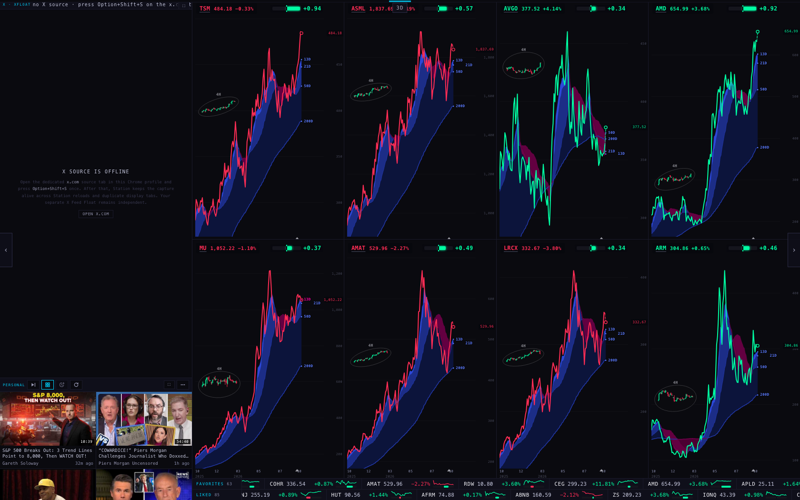
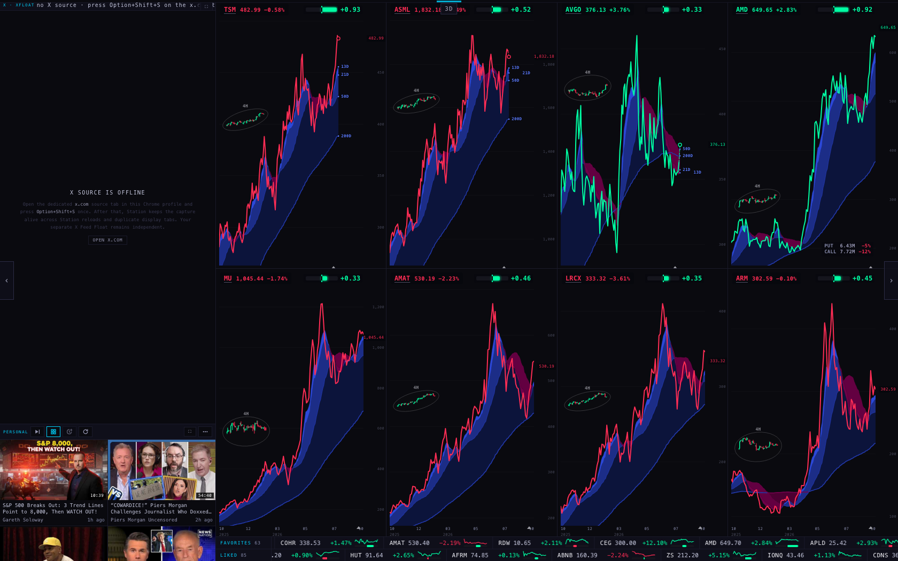
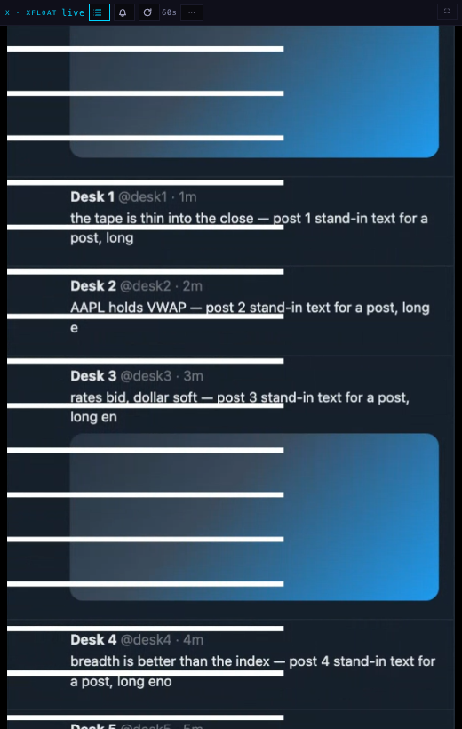
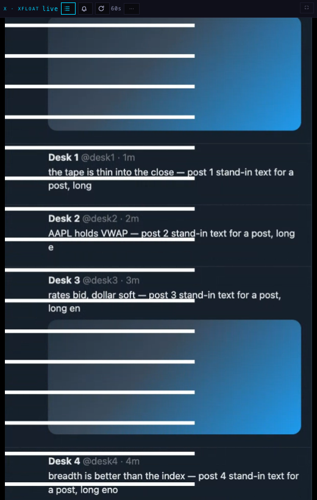
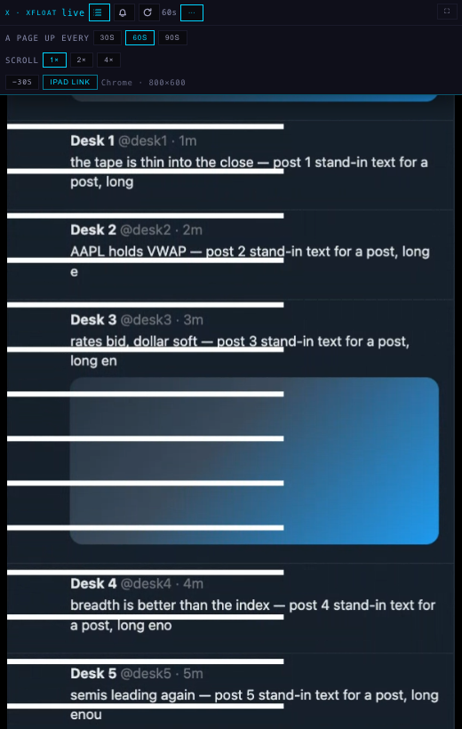
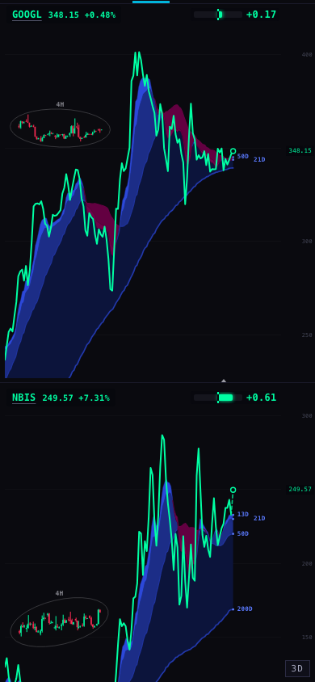

The dashed line is today's Station: it keeps building. The solid line is this branch with keeping on: it builds what the first lap needs, then nearly stops. "After" in this section always means keeping on.
| What | Before | After |
|---|---|---|
| New chart documents built | 74 | 30 |
| …of those, after the first lap (minutes 12–15) | 21 | 4 |
| History reads (/candles) | 592 | 543 |
| All requests | 1863 | 1328 |
| Heap, average of minutes 5–15 | 55 MB | 87 MB |
| Documents alive (all frames), minutes 5–15 | 15–21 | 23–29 |
| What | Before | After |
|---|---|---|
| New chart documents built, 30 minutes | 144 | 38 |
| …in the second half (minutes 15–30) | 70 | 8 |
| History reads (/candles), 30 minutes | 1106 | 1049 |
| …in the second half (minutes 15–30) | 514 | 506 |
| Heap, average of minutes 20–30 | 62 MB | 102 MB |
| Documents alive (all frames), minutes 20–30 | 15–21 | 29–31 |
| Times a parked chart was re-used | 232 | 338 |
| Times a new one was built because the parked one had been thrown away or did not fit | 144 | 38 |
| …of those: the parked chart was the wrong kind (plain vs RSI page) | 80 | 0 |
The long runs above were made one after the other, with other measurements running beside them, so their processor times cannot be compared fairly. This pair ran at the same time.
| What | Before | After |
|---|---|---|
| Script time | 18.1 s | 18.9 s |
| All main-thread work | 50.7 s | 51.5 s |
| Layout | 3.0 s | 2.9 s |
| Long tasks (over 50 ms) | 56 | 63 |
| New chart documents built | 53 | 26 |
| History reads (/candles) | 433 | 421 |
| Heap at the end | 55 MB | 99 MB |
| Documents alive at the end | 17 | 29 |
On a page change the Station draws the next page's charts out of sight and fades them in when all are ready. This is the wait, read from the Station's own record of each change, on two pages run side by side for the same minutes.
| Run | Page changes | Usual wait | Longest | Waits of 2 s or more | Chart documents built |
|---|---|---|---|---|---|
| Before | 13 | 0.9 s | 1.7 s | 0 | 20 |
| After | 13 | 0.8 s | 1.8 s | 0 | 8 |
| After · changes that built nothing | 11 | 0.8 s | 1.8 s | 0 | 0 |
| After · changes that built documents | 2 | 0.8 s | 0.8 s | 0 | 8 |
The Station already parked one chart per slot to re-use on the next step. It threw that parked chart away in three cases, and each one is a normal part of the lap: when a page shows fewer charts than the last one (every 2-, 4- and 6-chart page emptied the slots above it); when the next page carries the RSI study (the parked plain chart cannot become an RSI chart, so it was dropped and a new one built, and the same on the way back); and on any page outside the lap.
?keepcharts=1 turns it on for that browser; ?keepcharts=0 turns it off again.


The bridge moves the real X page a whole pixel at a time (about four times a second at today's pace). The browser sends a new picture only when the page changes. Between two pictures the pane slides its crop by fractions of a pixel so the feed looks continuous. The pane paints 12 times a second. So a list that draws only what is visible, images that load late, and a scroll done with a transform are all things X's own page already does or that do not exist in a picture; they are not ours to add.
The picture and the crop that belongs to it reach the pane by two different roads. Around every whole-pixel step they arrive apart, and for a paint or two the pane put the new crop on the old picture, or the old crop on the new one. The feed jumped back by the step and forward again.
| Pace | Backward hops a minute | Biggest usual move 19 paints in 20 are smaller | Biggest single move | Feed speed seen px a second | Frames late over 25 ms | Long tasks | Pane's own work a minute | Paints · new pictures a second |
|---|---|---|---|---|---|---|---|---|
| 3 px a second 1× · today | 86 → 0 worst 0.84 → 0.04 px | 1.10 → 0.33 px a usual move is 0.29 px | 1.14 → 0.36 px | 2.8 → 2.5 | 11 of 1792 → 3 of 1789 | 0 → 2 | 12.7 → 11.4 s | 12 · 3.5 |
| 6 px a second 2× | 128 → 5 worst 0.90 → 0.14 px | 1.46 → 0.68 px a usual move is 0.57 px | 1.50 → 1.43 px | 5.7 → 5.4 | 20 of 1763 → 31 of 1744 | 7 → 12 | 16.5 → 16.0 s | 12 · 7.0 |
| 12 px a second 4× | 122 → 0 worst 16.83 → 0.06 px | 3.75 → 1.63 px a usual move is 1.20 px | 8.89 → 3.42 px | 10.2 → 11.6 | 90 of 1644 → 17 of 1771 | 32 → 6 | 23.4 → 16.4 s | 11 · 3.6 |
Each run is 30 seconds of motion and 30 seconds of cost, before and after back to back, with one chart soak running beside them. "Backward hop" means a paint where the picture moved up the feed by more than an eighth of a pixel.
The browser was asked which lines of code made the objects still alive at minute 5 and at minute 30. One line accounts for the growth:
live sampled bytes: 34.1 MB → 48.0 MB
+23949 kB ( 512 → 24461) candleCachePut @ :0 ← (anonymous)
+2727 kB ( 2644 → 5371) (V8 API) @ :0 ← (root)
+1129 kB ( 493 → 1621) cloudUnpack @ /station-shells/chart-v1:1102 ← cloudDailyCached
+402 kB ( 66 → 468) scChartDraw @ /station-shells/chart-v1:2408 ← scChartLoad
+377 kB ( 385 → 763) pageFrameReady @ /:4296 ← every
+267 kB ( 2252 → 2519) dailyRows @ /_indicators/station-clouds.js:100 ← applyCloudRows
+146 kB ( 693 → 839) (anonymous) @ /station-shells/chart-v1:313 ← (root)
+144 kB ( 29 → 173) scChartLoad @ /station-shells/chart-v1:3629 ← scChartWire
…shrank most:
-545 kB ( 930 → 385) (anonymous) @ /station-shells/chart-v1:1021 ← map
-1998 kB ( 1998 → 0) postDeckGeiger @ /:1386 ← fanoutDeckGeiger
-2661 kB ( 2717 → 56) (anonymous) @ /station-shells/chart-v1:1184 ← map
-3976 kB ( 8753 → 4777) candleCachePut @ /_provider/provider.js:1161 ← (anonymous)
-4773 kB ( 4965 → 192) (anonymous) @ /_provider/provider.js:1301 ← map
candleCachePut is the Station's shared store of price history (one copy for every chart). A series in it has a time limit, but an expired series was only removed when the same series was asked for again, or when the store reached 48 million characters. Names the lap had moved on from stayed.
The store now removes expired series itself, at most once a minute. Measured on the after run, when the half hour turned: 480 series, 26.2 million characters at minute 22 (431 of them expired) → 167 series, 12.9 million at minute 23 → 21 series, 0.6 million at minute 25. Before the change those series would have stayed until the store reached its 48-million-character ceiling.
The after line is higher for another reason: that run had chart keeping on, so 8–14 more charts were alive (section 1). The store's part is the dip after minute 21: about 25 MB given back when the half hour turned. With keeping off, as the branch ships, the heap is the before line minus the store's drift; that combination was not run for 30 minutes.
The heap after the change, same question, minute 5 → minute 30:
live sampled bytes: 40.8 MB → 82.1 MB
+10653 kB ( 2003 → 12655) (anonymous) @ /station-shells/chart-v1:1289 ← map
+6062 kB ( 6899 → 12961) (anonymous) @ /_provider/provider.js:1311 ← map
+3022 kB ( 1082 → 4104) (anonymous) @ /station-shells/chart-v1:1021 ← map
+3021 kB ( 3182 → 6203) (anonymous) @ /station-shells/chart-v1:1184 ← map
+2837 kB ( 403 → 3240) cloudUnpack @ /station-shells/chart-v1:1102 ← cloudDailyCached
+1847 kB ( 9324 → 11171) candleCachePut @ /_provider/provider.js:1162 ← (anonymous)
+1334 kB ( 0 → 1334) postDeckQuote @ /:1326 ← fanoutDeckQuote
+1054 kB ( 2364 → 3418) dailyRows @ /_indicators/station-clouds.js:100 ← applyCloudRows
…shrank most:
-24 kB ( 24 → 0) tapeQuoteBatch @ /:1853 ← (anonymous)
-24 kB ( 40 → 16) (anonymous) @ /station-shells/chart-v1:1181 ← (anonymous)
-24 kB ( 32 → 8) get @ :0 ← candleCacheGet
-30 kB ( 46 → 16) (anonymous) @ /_provider/provider.js:337 ← (root)
-68 kB ( 399 → 331) collectRoots @ :0 ← inPagePrepareForScreenshots
Whole suite, node --test at the repo root. Live: 1080 tests, 27 failing (28 distinct names). Branch: 1095 tests, 27 failing (28 names). New failing names: 0. Fixed: 0. 15 tests were added for this work; 5 older tests that quoted exact lines were updated to the new wording.
shots/x-before-3-pane-wide-crop.png). It happened with the old code; the numbers of those two runs are in feed pixels, so they stand.
Chart runs: tools/soak.mjs — the live Station (station.scintillahub.ai) in headless Chromium at 1680 × 1050, with this checkout's files served in place of the deployed ones and every non-GET request blocked (79 before, 79 after). "Before" is commit 6051585 (S16b + SLOW1, byte-identical to live 46a7f73). Every "after" chart run was made with keeping on (it was the default while the runs were made; the code path is the one ?keepcharts=1 now selects, and a last 3-minute run with and without the switch confirmed both). A chart document is counted when the browser requests /station-shells/chart-v1 as a document. Heap is read after a forced garbage collection. Data: data/soak-*.json, data/pair-*.json.
Memory: tools/heap-diff.py on the browser's allocation samples (objects still alive, by the line that made them). Data: data/heap-*.txt.
X runs: tools/xscroll.mjs + tools/xscroll-analyze.py — new headless Chromium (no window) with the bridge loaded from this checkout, a stand-in x.com page carrying a ruler (a white bar every 48 px), the bridge's own capture document handed a tab capture at its cap (1920 × 1080, at most 15 frames a second), and the pane from this checkout at 520 × 820. On every paint the ruler's position in the pane's canvas is read to a fraction of a pixel; that is the picture's real movement. The pane's 60-second page-up is held off during a run. Data: data/x-*-summary.json.
Files changed: deck/index.html (parked charts), station-shells/chart-v1/index.html = chart/index.html (parked: no re-read), _provider/provider.js (expired series), station-shells/x-v2/index.html (reads the squares; pace), station-x-bridge-draft/content.js + manifest.json 0.7.24 (paints the squares; pace), x-health/index.html (expects 0.7.24), tests.